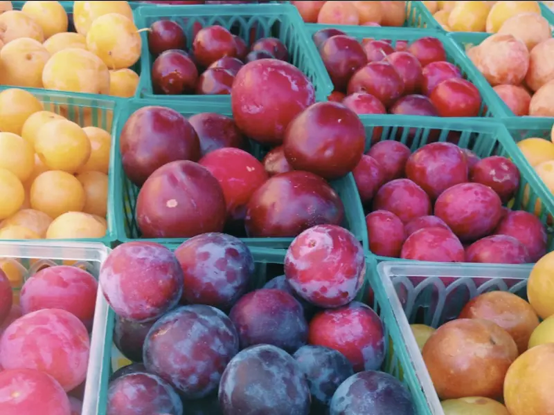
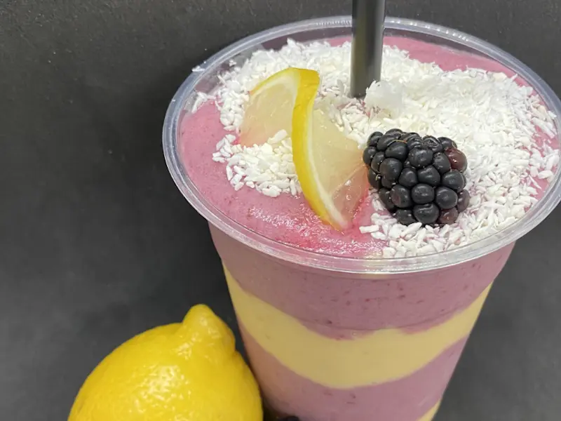
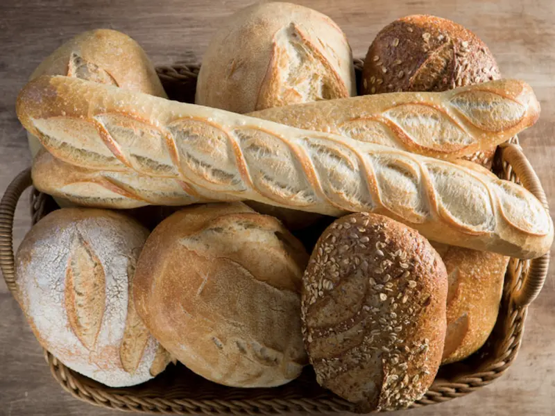
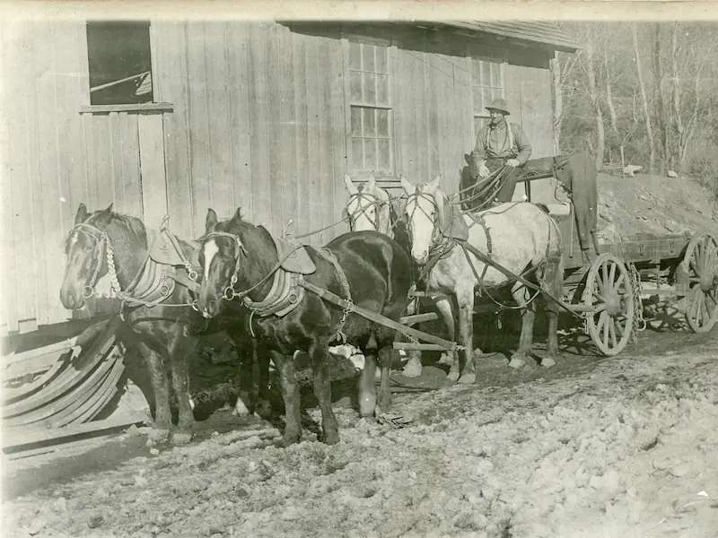

What You Should Know About Sun Valley
Chamber Page Info
Sun Valley Statistics
- Local Population: 1,406
- Elevation: 5,920 feet
- Founded: December 21, 1936
- State/County: Blaine Idaho
- Time Zone: UTC-7 (MST)
- Main Attraction: Skiing
- Official Website: Click Here
Local Business Spotlight
Promotion for your business could be right here! Contact Erik Rutledge for more information.
Daily Fact
The name "Sun Valley" is most often used to refer to the entire area of the Wood River Valley. This area includes the neighboring cities of Ketchum, Hailey, and Bellvue, but the city of Sun Valley takes up only a small portion of the area.
Things to Discover in Sun Valley
Wood River Farmers' Markets
Come join the fun! Taste the freshness of local produce, get to know your farmers, buy in-season produce and plant starts, listen to free music with family and friends and enjoy the atmosphere of the Wood River Farmers' Markets.
Hank and Sylvie's
Hank and Sylvie's is a one stop shop for anything you might need. We sell arts & crafts, home decor, puzzles, games, books, baked goods, and custom made floral arrangements.
5b Foods
We want to make it easier for you to fill your pantry and fridge with homemade, delicious food that is healthy for you and the environment.
Big Wood Bread
Bigwood Bread is committed to using only the highest quality ingredients in our breads. Our flour is milled to our exact standards by family farmers in the Northwest. We never use artificial ingredients and all of our products are GMO- and preservative-free.
Sun Valley Guides
Sun Valley Guides combine years of training and experience with an intimate knowledge of our local mountains to deliver an extraordinary backcountry experience. We love what we do and enjoy sharing our passion with our guests. whether you're looking for a day of powder skiing or a multi-day adventure exploring remote mountains, join us for an adventure that exceeds your expectations.
Blaine County Historical Museum
On permanent display at Blaine County Historical Museum are exhibits of the settling and early industry of the Wood River Valley, and the notable people and places of Blaine County that make up our rich history.